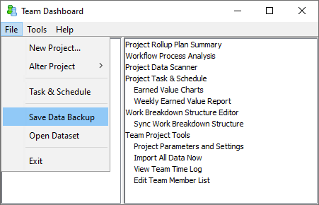

At the conclusion of your team project launch, you should save a data backup of the team dashboard. From the main dashboard window, choose C → Tools → Save Data Backup.

This will save a ZIP file with a snapshot of the data for your team project. You can use the Process Dashboard Quick Launcher to open this backup at any time in the future, and view all reports exactly as they appeared when the backup was made.
It is also a good idea to save a data backup each week during your project. This provides a useful history of your project's progress.
At the end of their launch, licensed users of the Team Software Process are required to submit their data to the Software Engineering Institute. The SEI uses this data to perform research into the benefits of the TSP.
To comply with this requirements, teams are encouraged to use the "Save Data Backup" feature, then send the resulting ZIP file to the SEI. If your company is concerned about releasing proprietary information in this backup, you might consider saving the backup in "Redacted" format and choosing to scramble the types of data (e.g. task names, names of individuals, etc) that you deem to be sensitive.
If you have created your own custom metrics collection framework, you will need to include a copy of that framework (which is also a ZIP file) along with your data submission.
At times, you may need to share a copy of your plan with a manager or other stakeholder who does not have the Dashboard Quick Launcher installed. For this purpose, a second export mechanism is provided that saves a non-interactive copy of the team project plan summary form. To accomplish this, open the team dashboard, navigate to the team project, and select Save Snapshot of Project Plan from the script menu. You can choose to save the file in various formats, which can be viewed later in programs such as Internet Explorer.